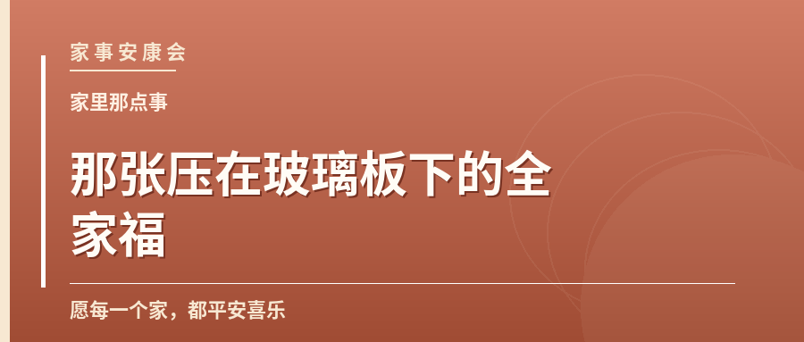
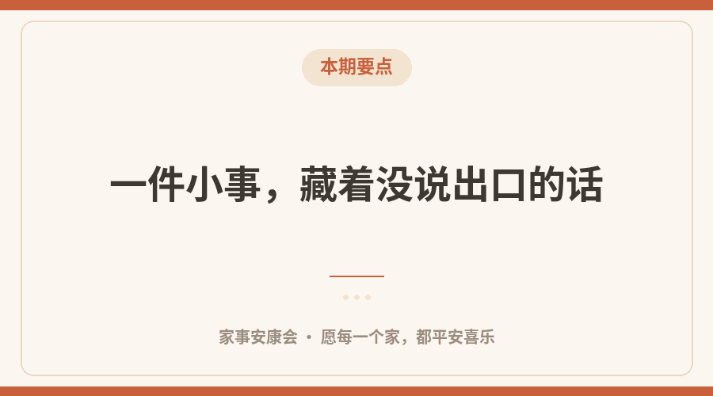
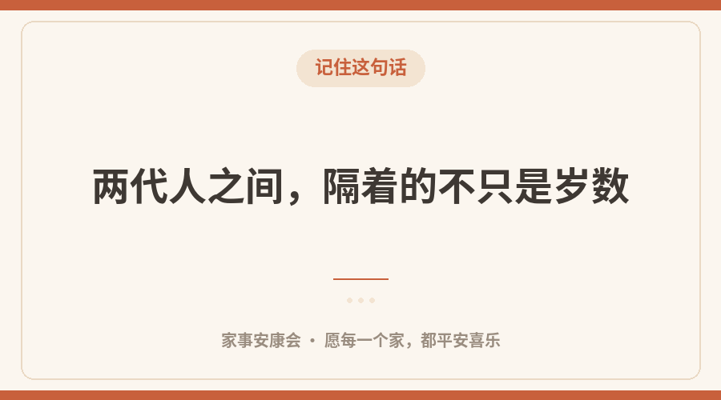

傍晚的厨房里，锅盖轻轻响了一声。 李婶把菜端上桌，顺手又把那盘孩子爱吃的往对面推了推。人还没到，位置已经留好了。
这样的细节，家里天天有，小到谁也不会特意记一笔。可许多年后再想起来，最清楚的偏偏就是这些。
一件小事，藏着没说出口的话
「那张压在玻璃板下的全家福」——说的其实就是这份不动声色。长辈表达惦记，很少用「我想你」，多用「多吃点」「路上慢些」「带件外套」。话越短，心思越沉。
年轻时我们总急着往外走，觉得这些叮嘱啰嗦；等自己也开始操心别人，才慢慢听懂里头的意思。立冬后护好血管，避开骤冷时段外出。

本期要点
两代人之间，隔着的不只是岁数
父亲不太会用手机，却会在深夜发一条语音；母亲把旧照片压在玻璃板下，擦桌子时总顺手抹一遍。他们不是不肯学新东西，是怕打扰，怕添麻烦。
「我没事」这三个字，有时候最需要被多问一句。 不必追问到底，坐下来陪着喝杯茶，话自己就出来了。
把日子过成可以回看的
常联系：一通没接到的电话，别拖成日后的遗憾。
多问问：请长辈讲讲从前，把老照片背后的名字记下来，这就是家史。

记住这句话
留位置：团圆饭桌上，给不在场的人也留副碗筷，是一种温柔的记挂。
写照片里缺席的人与在场的人，讲家庭的聚散。家里的事，大多没有什么大道理，靠的是一遍遍不嫌烦。
你家有没有这样一件小东西，一看见就想起谁？欢迎在留言区说说。
愿每一个家，都平安喜乐。——家事安康会
（文中人物均为化名，情节为艺术加工，如有雷同纯属巧合）
愿每一个家，都平安喜乐
这里是家事安康会，聊聊家长里短、相处之道与安康小事。
觉得有用，点个「在看」，也转给惦记的人。
内容仅供生活参考，具体情况请咨询专业人士。